Scene 1Warm-Up
▶ Start hereHow your Wonder Films lessons work1-minute videoOpen ▾
🎯 TodayI can…
- name and explain real conservation practices people use to protect the environment.
- sort conservation actions by category and explain how each one reduces human impact.
- evaluate a conservation solution and make a claim about why it helps the environment.

🔎 Mystery specimenWhat is this giant block?
What to do: Press Inspect specimen. Move the magnifying lens over the block, then tap 3 things you notice.

📚 Word WallWords scientists use
What to do: Tap or click each card to flip it and read what the word means. Tap 🔊 to hear the word.
Scene 2The Lesson
♻️ Part 1Reducing Waste
Every day, people throw things away: packaging, paper, bottles. A lot of it doesn't have to be waste. Recycling turns old materials into new ones. Aluminum cans get melted and made into new cans.
Even smarter is to reduce: buy less, choose less packaging, and reuse things first. Less trash going in means less harm coming out.
🎞️ Put the scenes in orderHow does a can get a second life?
What to do: Drag each photo into the film strip, from first to last. You can also tap a photo, then tap a frame. Get the order right and your strip becomes a movie.
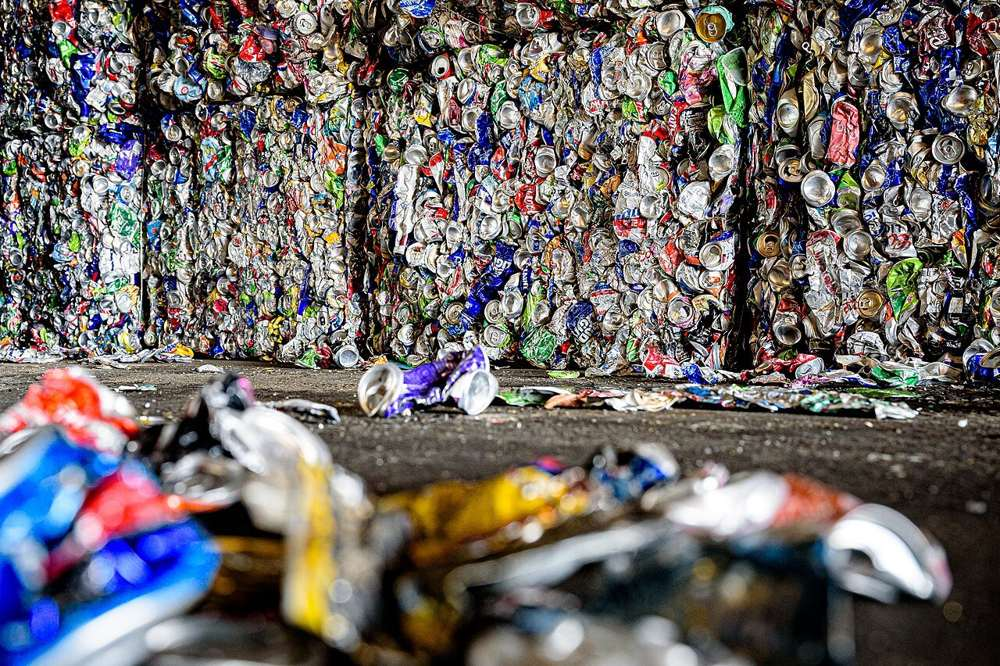
Which is even better for the Earth than recycling a can?
💧 Part 2Water Conservation
Most of Earth's water is salty. Only a small part is fresh water we can drink or use to grow food. Water conservation means making careful choices: turning off the tap while brushing your teeth, fixing leaks, and covering garden soil with mulch so it stays damp. A faucet that drips once every second can waste more than 3,000 gallons in a year.
🧪 The Mulch TestWhich garden bed saves water?
What to do: Follow the steps one at a time. You will pick, test, and then explain.
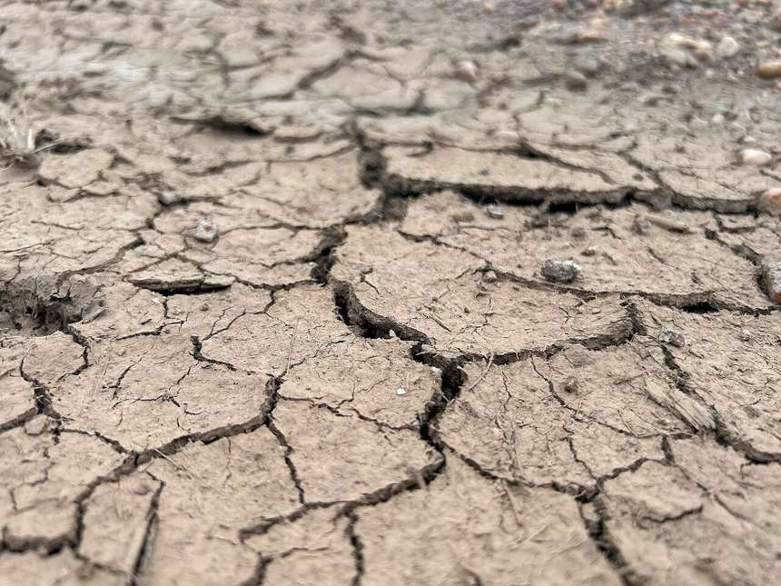

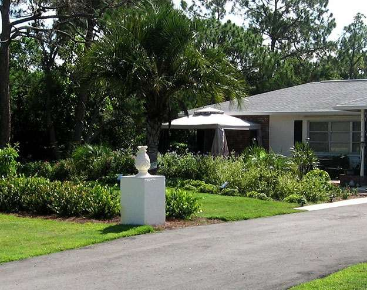
🌿 Part 3Protecting Habitats
When land is cleared for buildings or roads, animals lose their homes. Communities protect habitats by setting aside nature preserves, planting native plants, and keeping streams and wetlands clean.
Not every action works the same way. The best choice depends on the problem you're trying to solve.
🚜 The Landfill DigDig down through a landfill
What to do: First, make a prediction. Then brush the glowing stop: drag across it (or tap it again and again) until the place shows.
Does trash buried in a landfill rot away quickly?
trashCover
soilOld
trashThe
bottom
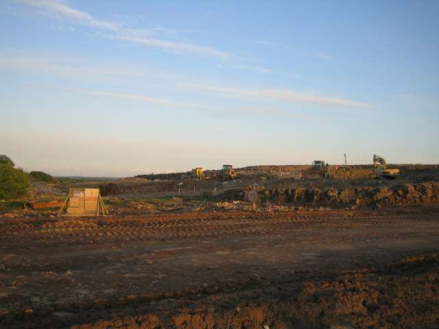
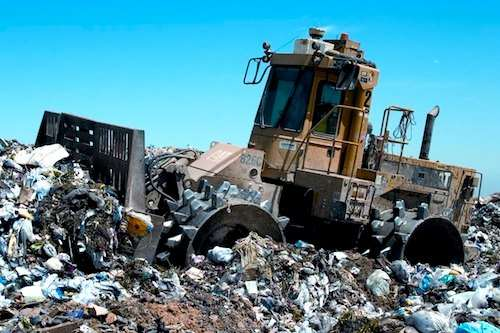
Stop 1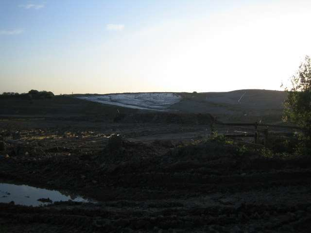
Stop 2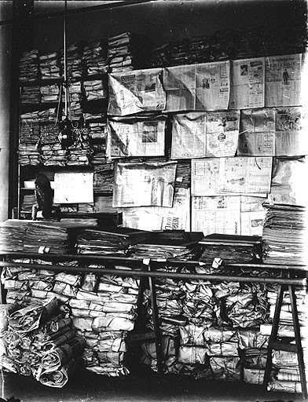
Stop 3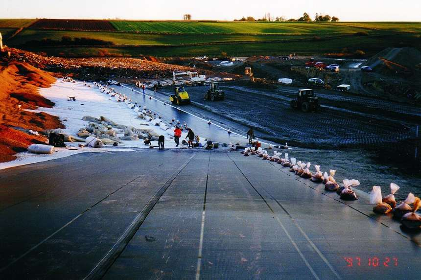
Stop 4Buried isn't gone. A landfill keeps trash out of sight, but much of it lasts for many years. That's why reducing and recycling come first: less trash means smaller landfills.
A friend says, "Throwing away one cup a day doesn't matter." What does the evidence say?
From the world's biggest landfill to a giant park
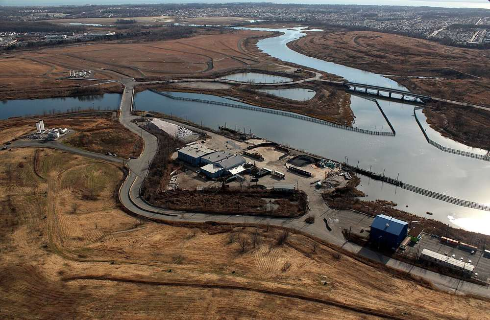
For more than 50 years, Fresh Kills was one of the biggest landfills in the world. Barges brought New York City's trash here every day. It closed in 2001.
Now workers are covering the trash hills with liners and soil and planting grass. It's becoming Freshkills Park, about three times the size of Central Park. Hawks, foxes, and grassland birds already live there.
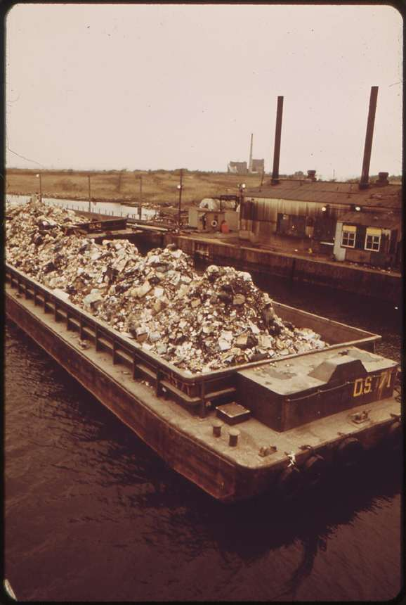
🕵️ Part 4Sort and Rate
What to do: Pick 3 actions, one at a time. Tap a clue, then pick its kind. Predict who it helps most, and watch the place appear.
| Action | My observation | Kind of action | Who it helps | My evidence |
|---|
🌍 Rebuild the placeUse your evidence to rebuild the place OPTIONALOpen ▾
What to do: Pick one you solved. Pick the place it points to, then pick the living things that belong there.
Pick one from your chart and explain it.
Start with: "Action __ shows…"
Scene 3Self-Check
What does the word conservation mean?
A community fixes a leaky pipe in a park fountain. What type of conservation practice is this?
A family plants native wildflowers along the edge of their yard and leaves a section unmowed. Which conservation practice does this best represent?
Scene 4Assignment
🔍 Part ASort and identify
What to do: Read each one. Pick the best answer, or type your answer.
1. Bring a reusable bag to the store. Which kind of action is it?
2. Install a rain barrel to collect water. Which kind of action is it?
3. Leave a wild area of a yard unmowed. Which kind of action is it?
4. Pick one action from above. In one sentence, tell who or what benefits when people do it.
🚀 Part BShort answer
What to do: Answer in complete sentences. Use your science words.
1. What is the difference between reducing waste and recycling? Why do scientists say that reducing is actually more powerful than recycling?
2. Why is habitat protection important for animals? What happens when a habitat is destroyed or damaged?
✍️ Write and explainDoes your best action really reduce human impact?
What to do: Pick one from your evidence chart. Answer the three questions. Use at least two of the science words under the boxes.
Start with: "I think that [your chosen action] helps the environment because…"
Start with: "I know this because during the sort, I noticed that…"
Start with: "This makes sense because when people [action], the result is that…"
🎨 Part CDraw and label
What to do: Draw one conservation action and what it does for the environment. Label the action and the resource it protects, and one living thing that benefits.
🎬 Your question from Scene 1Can you answer it now?
What do you still wonder about? Write your question here. Then answer it.
📋 My answersEverything you wrote, in one place
(Your answers show up here as you write.)
How to turn in: Copy your answers and paste them into the Canvas assignment. Or download the file and upload it. Then press Save my drawing in Part C and upload your drawing too.
✅ Checklist
What to do: Tap each item when it is done. Items you finish on the page check themselves.
- My evidence chart has 3 actions and my explanation.
- Part A: all four answers.
- Part B: questions 1 and 2.
- Part C: my drawing and both labels.
- Write and explain, with at least two science words.
🎬 Premiere my conservation storyYour exhibit
What to do: Check your exhibit. Pick the one you wrote about, add your first name, then press Premiere film.
I observed…
It is a…
My evidence…
It tells us…
🎞️ This film's frames

A can's second life
The Mulch Test
The Landfill Dig
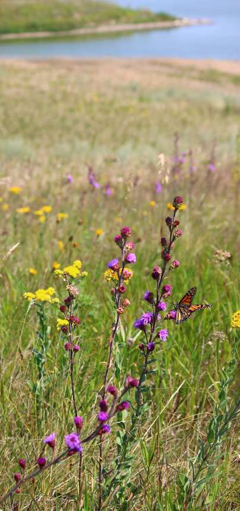
Sort and rate
Earn all four frames in the Lesson, then finish the checklist.
🔜 Coming up next25.01 · Why Do We Protect National Parks?
Next time, find out why people work so hard to protect wild places like national parks.
Photo and music credits
- WS-outdoor-southeast-gallery-21 (33209263120), U.S. EPA WaterSense, Public domain
- Red rain barrel, Cornellrockey, CC BY-SA 4.0
- Jenny And Our Vegetable Garden (8429730598), James Mann from Moncton, New Brunswick, Canada, CC BY 2.0
- Compost bin with compost, Niwrat, CC BY-SA 4.0
- Compost final 3, Bernard Dejean, CC BY-SA 4.0
- Farragut Sailors beach clean-up (5858658), U.S. Navy photo by Petty Officer 3rd Class Jack Aistrup, Public domain
- Volunteers participate in beach debris cleanup - 52752007055, CapeHatterasNPS, Public domain
- Native Prairie Pollinator Gardens (43755020934), USFWS Mountain Prairie, Public domain
- Asarina procumbens and pollen-covered Bombus hortorum, Flobbadob, CC BY-SA 4.0
- 04222023 Earth Day 2023 WMNYC SWC q60 Pharos, Wil540 art, CC BY-SA 4.0
- Greenville Public Works, ECVC Recycling Sorting facility - 15, City of Greenville, NC, Public domain
- TANA Landfill Compactor E520, Tanaoy, CC BY-SA 4.0
- "MT. VESUVIUS" DUMP, SOIL-COVERED TRASH - NARA - 542536, Gene Daniels, EPA DOCUMERICA, Public domain
- LANDFILL IS LOADED ON BARGES FOR USE AT FRESH KILLS, ON THE WEST SHORE OF STA…, Chester Higgins Jr., EPA DOCUMERICA (1973), Public domain
- 20110522 - Mount Trashmore - Virginia Beach VA - DSC 0298A, Bdmccray at English Wikipedia, CC BY 3.0
- BUTTERFLIES AND WILDFLOWERS IN EVERGLADES NATIONAL PARK - NARA - 544618, Fred Ward, EPA DOCUMERICA, Public domain
- Greenville Public Works, ECVC Recycling Sorting facility - 14, City of Greenville, NC, Public domain
- Landfill compactor, Ropable, Public domain
- Florida from ISS night 2014, NASA, Public domain
- Mt Trashmore, Kubigula (talk), CC BY-SA 3.0
- GARBAGE SCOWS BRING SOLID WASTE, FOR USE AS LANDFILL, TO FRESH KILLS ON STATE…, Chester Higgins Jr., EPA DOCUMERICA (1973), Public domain
- GARBAGE SCOW AT FRESH KILLS ON STATEN ISLAND, JUST EAST OF CARTERET, NJ. WAST…, Chester Higgins Jr., EPA DOCUMERICA (1973), Public domain
- Landfill compactor edit, Ropable (edit), CC0
- Calvert Landfill Site 3 - geograph.org.uk - 499259, Andy Gryce, CC BY-SA 2.0
- Interior of Ferry Museum showing shelves with papers and newspapers, Tacoma, …, Albert Henry Barnes, Public domain
- Geomembrane installation, Werner W Müller and Fokke Saathoff, CC BY 3.0
- GIs volunteer and recycle cans at Guantanamo, U.S. Army (Guantanamo Bay), Public domain
- Recycling combine - Sunset Pk, NYC 05, CaptJayRuffins, CC BY-SA 4.0
- US Navy 090624-M-0581G-024 Molten aluminum is drained from the furnace into a…, U.S. Marine Corps, Public domain
- Calvert Landfill Site - geograph.org.uk - 439660, Andy Gryce, CC BY-SA 2.0
- USMC-110114-M-2664B-059, Lance Cpl. Miranda Blackburn, U.S. Marine Corps, Public domain
- Dry cracked soil ground, Ibrahim Achiri, CC BY-SA 4.0
- WS-outdoor-southeast-gallery-20 (32778639273), U.S. EPA WaterSense, Public domain
- December 6, 2012 Fresh Kills Landfill Flyover, Staten Island, New York (83924…, U.S. EPA, Public domain
- Music: Scott Joplin, "Sunflower Slow Drag", played by "The President's Own" United States Marine Band, public domain (via Wikimedia Commons).
- Opti the owl: Optima Academy. Sound effects are made by the page. The can movie, the Mulch Test, and the Landfill Dig are models; every place photo is real.